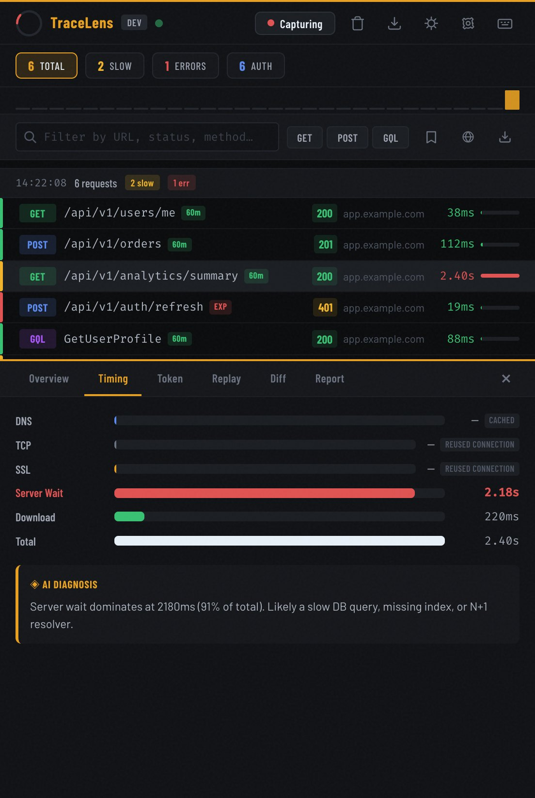

A read-only API debuggerinside Chrome DevTools.
TraceLens is a free extension that adds a tab beside Console and Network. It groups every request by the click that caused it, times each phase, decodes tokens and writes the incident report for you.
For developers debugging their own API calls, and support engineers working out why a customer’s page is slow or failing.
/api/v1/analytics/summary2,400 msServer wait dominates at 2,180 ms (91%). Likely a slow DB query or N+1 resolver.
One action, read properly
Requests within 800 ms are one burst: the click that caused them. Each is timed by phase and the slowest one is explained in a sentence.
/api/v1/analytics/summary2,400 msServer wait dominates at 2,180 ms (91%). Likely a slow DB query or N+1 resolver.
Sample burst: one click on “Open orders”, 6 requests, 2 slow at 800 ms, 1 error.
How bursts are grouped, in panel.jsSettings
Start with the threshold: drag it to 100 ms and the burst is read again, or switch on this page’s own requests to see your browser’s trace.
/api/v1/analytics/summary2,400 msIncident: slow orders page Window: 14:22:08–14:22:11 (3.2 s) Requests: 6 · Slow: 2 · Errors: 1 Slowest: GET /api/v1/analytics/summary 2,400 ms (server wait 2,180 ms, 91%) Phases: DNS cached · connect reused · TLS reused · wait 2,180 · download 220 Error: POST /api/v1/auth/refresh 401 (token expired) Likely cause: slow DB query or N+1 resolver behind /analytics/summary Cascade: none; the longest slow run at ≥ 1,000 ms is 1 Baseline: /analytics/summary averages 640 ms; this call is +275% (regression, over your +50%)
Everything in one tab
The report on the left is what TraceLens writes for this burst. Each control below changes it, and the changes stay.
Timing waterfall
DNS, connect, TLS, server wait and download per request. Cached phases are labelled.
JWT inspector
Bearer tokens decoded as they pass. Subject, scope, issuer, algorithm, and a live countdown to expiry.
Diagnosis
Status code, timing phases and auth state read together and stated in plain English.
Cascade alert
Three or more consecutive slow requests raise an alert before it becomes an outage.
Request diff
A fast and a slow call to the same endpoint, compared field by field.
Replay and export
Copy as cURL, fetch or Python. Export HAR, a .tracelens snapshot, a Postman collection or a Jira-ready incident report.
Performance baseline
Snapshot endpoint averages and get told when a request regresses past your threshold.
AI assistant
Ask Claude or GPT about any request with your own key. Tokens, cookies and raw JWTs are stripped before anything is sent.
All of it from the keyboard
J and K step through requests, Space opens the drawer, Esc closes it. B bookmarks, R copies cURL, C copies the report, T cycles the four themes, D groups by domain, and ? lists the rest.
Nothing leavesunless you ask
Here is the whole manifest, what it asks for and what it does not.
| Permission | TraceLens | What it is for, or would allow | Declared under |
|---|---|---|---|
storage | asked for | saving your settings locally | permissions |
sidePanel | showing the panel in Chrome’s side panel | permissions | |
api.anthropic.com, api.openai.com | host permissions | the AI assistant only, with your own key, tokens and cookies stripped first; never called unless you ask | host_permissions |
webRequest | not asked for | reading or blocking traffic | permissions |
declarativeNetRequest | modifying traffic | permissions | |
scripting | injecting code into pages | permissions | |
content scripts | none | touching the page at all | content_scripts |
Captured data lives in browser memory; close DevTools and it is gone. No analytics, no telemetry. The only outbound calls are the ones you make to the AI provider you choose, with your own key. Every line is on GitHub, unminified. MIT.
Read the manifest
Running in sixty seconds
First, clone it.
One folder, no build step. What Chrome loads is what you can read.
git clone https://github.com/Siddharthachuahan9/TRACELENSThen load it unpacked.
Open chrome://extensions, switch on Developer mode, press Load unpacked and choose the tracelens/ folder.
Open DevTools on any page.
Press F12. The TraceLens tab sits beside Console and Network and starts capturing at once.
~/code $ git clone https://github.com/Siddharthachuahan9/TRACELENS Cloning into 'TRACELENS'... Resolving deltas: 100%, done. ~/code $ ls TRACELENS/tracelens background.js devtools.html devtools.js generate-icons.js icons/ manifest.json panel.css panel.html panel.js sidepanel.html sidepanel.js

No build step. No npm. No account.